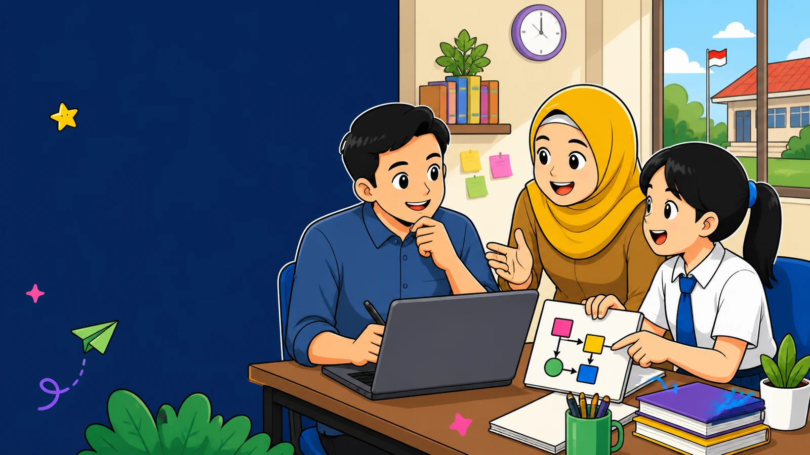

Berangkat dari kebutuhan
Fitur dibuat untuk menyelesaikan pekerjaan yang nyata, bukan hanya karena teknologinya sedang populer.

Tentang HIMUNG.ID
HIMUNG.ID tumbuh dari kebutuhan yang dekat: guru yang perlu mencatat lebih cepat, siswa yang harus melapor tanpa ribet, dan sekolah yang membutuhkan data lebih rapi.
Cerita HIMUNG.ID
HIMUNG.ID menyediakan aplikasi satu per satu dari persoalan yang benar-benar ditemui. Setiap produk digunakan, dipelajari, lalu diperbaiki dari masukan pengguna. Cara ini membantu kami menjaga agar teknologi tetap mudah dipahami dan tidak menambah pekerjaan baru.
Kami tidak memulai dari sistem yang besar. Kami memulai dari satu pekerjaan yang ingin disederhanakan, kemudian membangun alur yang cukup jelas untuk digunakan dalam kegiatan sehari-hari.
Prinsip yang dijagaIlmu dan teknologi hanyalah alat, yang membuatnya bermanfaat adalah akhlak.
Yang Kami Jaga
Prinsip ini digunakan saat mengembangkan produk maupun menjalankan eksperimen di HIMUNG.ID Lab.
Fitur dibuat untuk menyelesaikan pekerjaan yang nyata, bukan hanya karena teknologinya sedang populer.
Bahasa, tampilan, dan alur dijaga agar tetap dekat dengan pengguna di sekolah dan nyaman digunakan dari berbagai perangkat.
Masukan dari penggunaan sehari-hari menjadi dasar untuk memperbaiki fitur, alur, dan cara produk diterapkan.
Cara Kami Bekerja
Setiap pekerjaan memiliki konteks yang berbeda. Karena itu, kami mempelajari alurnya terlebih dahulu sebelum menentukan bentuk teknologi yang sesuai.
Memahami pekerjaan, pengguna, data, dan kendala yang dihadapi.
Menentukan bagian yang dapat dirapikan tanpa mengubah tujuan utama.
Membangun alur awal dan mengujinya pada kebutuhan yang nyata.
Mempelajari masukan pengguna dan menjaga produk tetap mudah digunakan.
Di Balik HIMUNG.ID
HIMUNG.ID dikembangkan oleh Wajib Himung dengan perhatian pada kebutuhan administrasi guru, kegiatan siswa, PKL, pendampingan, dan layanan sekolah. Produk dan eksperimen yang ada terus bertumbuh dari pekerjaan sehari-hari serta proses belajar yang berkelanjutan.
Pelajari manfaat, fitur, tampilan, dan akses resmi setiap produk HIMUNG.ID.